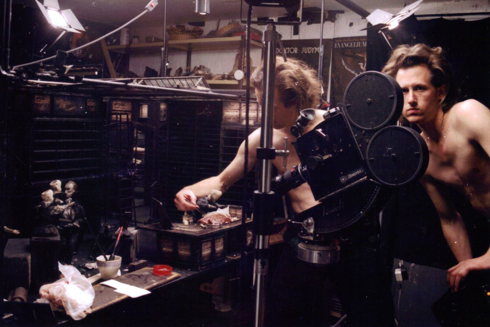

퍼핏 애니메이션의 거장
‘퀘이 형제’
쌍둥이 형제인 스티븐 퀘이와 티모시 퀘이는 1947년 미국 필라델피아에서 태어났다. 이들은 1970년대부터 영국에서 영화감독이자 애니메이션 감독 겸 작가로 활동하면서, 애니메이션, 실사영화, 일러스트레이션, 국립극장의 무대세트 디자인 등 다방면에 걸친 수 많은 작품들을 남겨왔다. 그들의 작품들은 산업사회의 이면의 부조리와 불안, 초현실주의와 에로티즘과 같은 철학적 주제를 다룬다. 대표작으로는 칸 영화제 단편 경쟁작<악어들의 거리(Street of Crocodiles)>(1986)가 손꼽힌다.

Section1. 소외에 관한 밑그림
:블랙드로잉
Ceux qui dèsirent Sans Fin 끝없이 욕망하는사람들
퀘이 형제는 1970년대 중반에 영화 포스터 형태의 흑백 작품들을 제작한다. 블랙드로잉 시리즈는 퀘이 형제의 누아르적 작품관을 암시한다. 산업화 된 도시의 어둠 속에 홀로 서있거나, 마리오네트로 전햑하였거나, 해부학적이고 그로테스크하게 표현된 인간들의 모습은 장차 퀘이의 작품들에 등장할 실존적 의문의 밑그림이자 초현실적 표현의 실마리다. 블랙드로잉 시리즈는 종이와 연필만을 재료로 삼았음에도 불구하고 섬세한 명암과 메타포로 현대인의 소외를 차분하고 절망적으로 그려낸다.

Section 2. 침북의 비명
:퍼핏 애니메이션
CStreet of Crocodiles “Tailor’s Shop”
Photograph©KIM yeonje
퀘이 형제는 퍼핏과 오브제의 스탑모션을 통하여 데코르 위에서 몽환적인 침묵의 서사를 펼친다. 스탑모션은 물리법칙과 시간의 연속성을 배제할 수 있는 표현기법이다. 퀘이 형제는 기법의 장점을 적극적으로 활용하여 다양한 시각적 변주를 시도하였다. 급작스러운 시점의 전환, 의도적인 초점의 회피와 도약, 섬뜩한 퍼핏의 등장과 잔혹한 변형은 영상을 지배적으로 관통하는 연주곡과 융합되어 혼란스러운 무의식으이 장면을 연출한다. 애니메이션 전반에 펼쳐진 성적 상징들과 불안정성은 관객에게 위태롭고도 놀라운 경험을 선사한다.